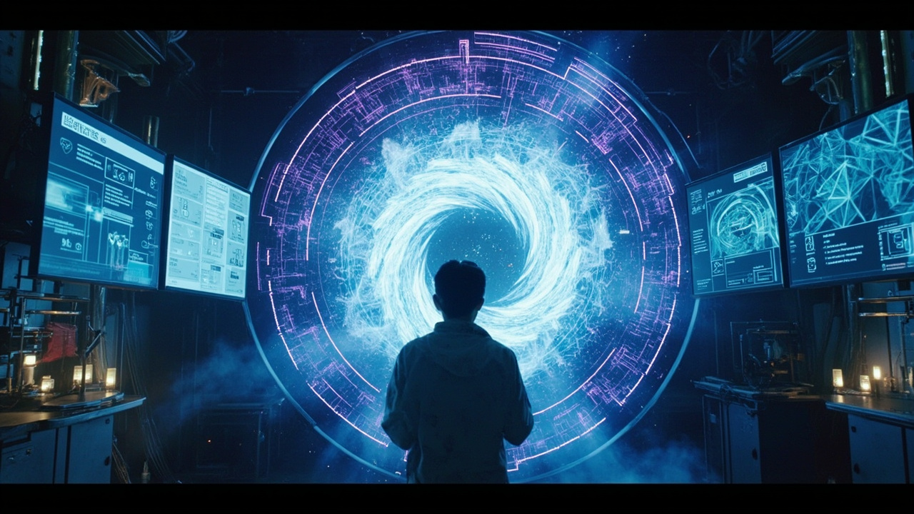
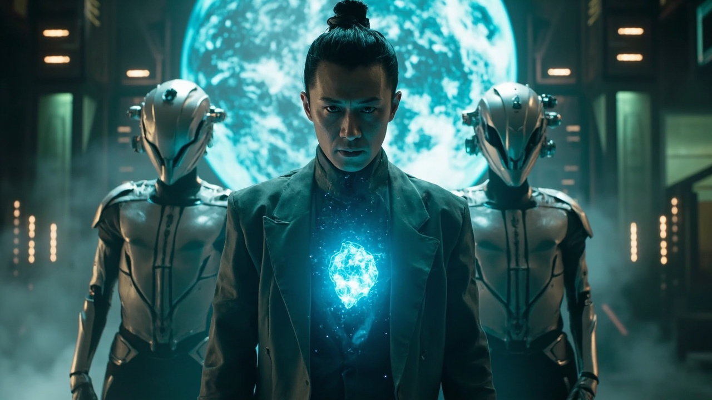

第78章：量子網關
量子加密坐標現世，深淵守望者突然到訪
量子加密坐標現世，深淵守望者突然到訪
林塵在實驗室中分析來自天機閣的神秘坐標，量子意識同步儀安靜地佇立在角落。三年前的發現如今成為他最大的希望，也是最大的風險——87%的意識崩潰機率讓這幾乎是一場自殺式的實驗。

三名身穿銀灰色制服的深淵守望者走入實驗室，神識抑制面具和斷緣劍在燈光下閃爍著冷光。他們根據《跨維度研究管制條例》第37條要求接管數據和設備。林塵悄悄執行緊急協議，數據正在通過量子加密通道上傳至他的生物存儲單元。

林塵的手指在操作台下悄悄移動，靈芯系統接收到他的神經信號後開始執行緊急協議。實驗室主計算機屏幕上滾動著偽造的實驗日誌，真正的坐標數據和量子網關模型已經安全上傳。他的胸口藍色量子晶片脈動加速，數據傳輸即將完成。
林塵一指點出正中核心，巨獸崩解成數十隻火焰飛禽四面圍攻。就在即將被擊中之際，靈芯系統臨時解鎖「量子網關的開啟」——可進行0.5秒的未來模擬。林塵看到七種應對方案的結果，最終以陀螺旋轉擾亂飛禽飛行軌跡，從包圍圈中完美突圍。
回到出租屋，林塵看向電子鐘——現實中只過了不到二十分鐘，但在虛擬道場裡經歷了兩個小時的高強度戰鬥。量子網關的開啟才是靈芯系統真正的價值所在。窗外天樞城的霓虹依舊閃爍，但在這座賽博朋克都市的陰影中，一個融合了科技與修真的傳奇正在悄然成長。